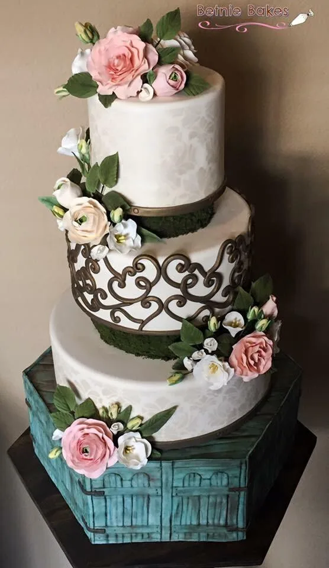
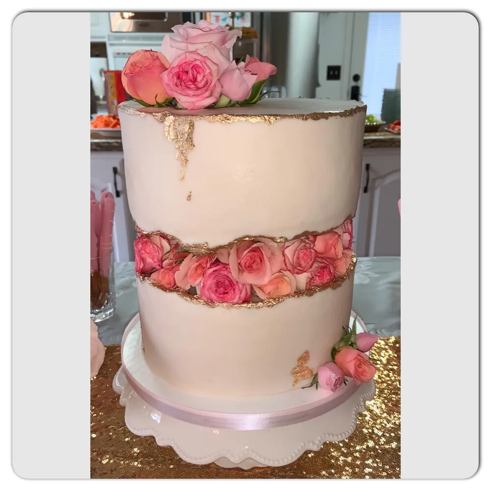
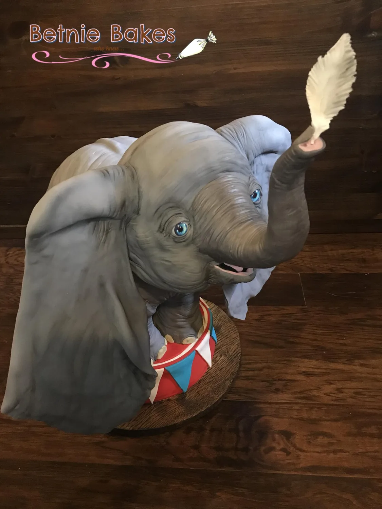
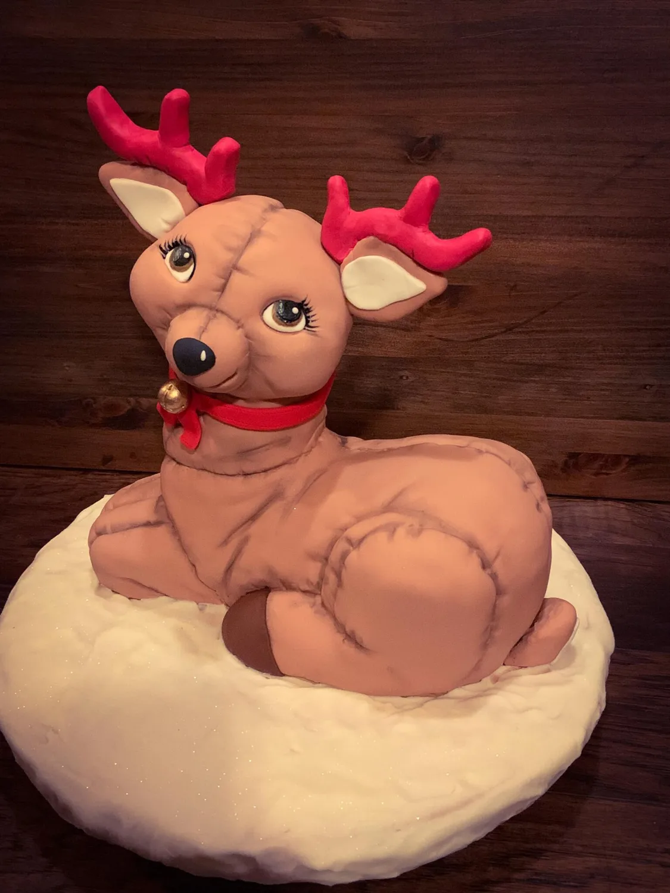
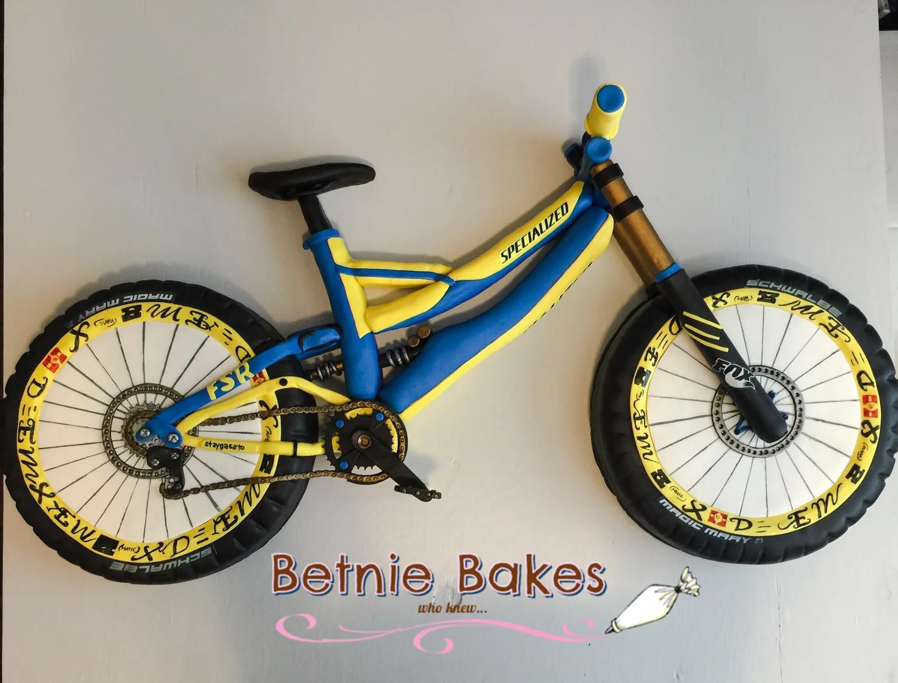
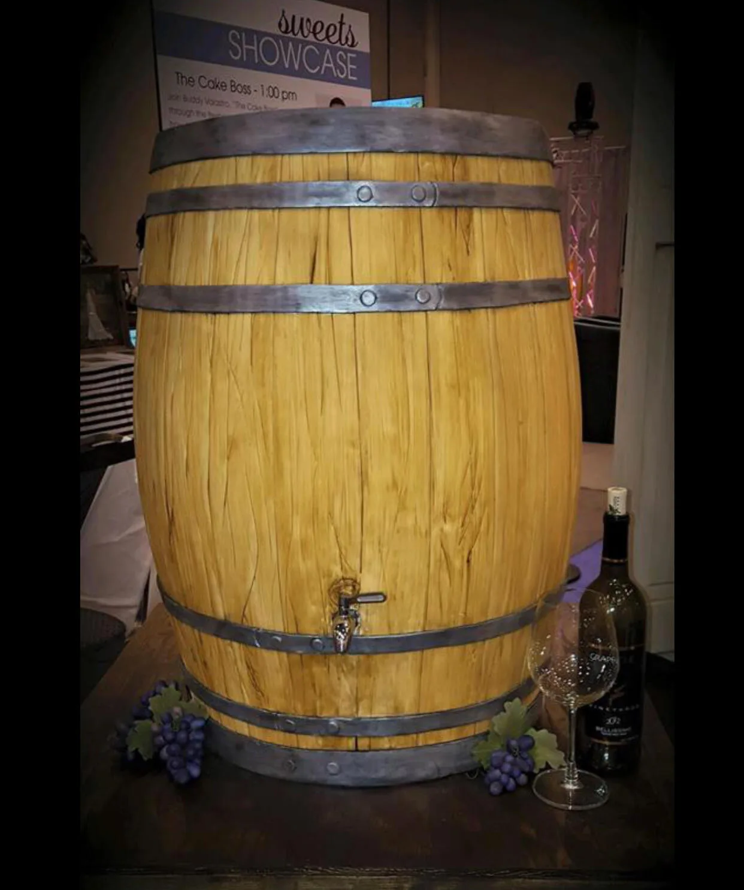
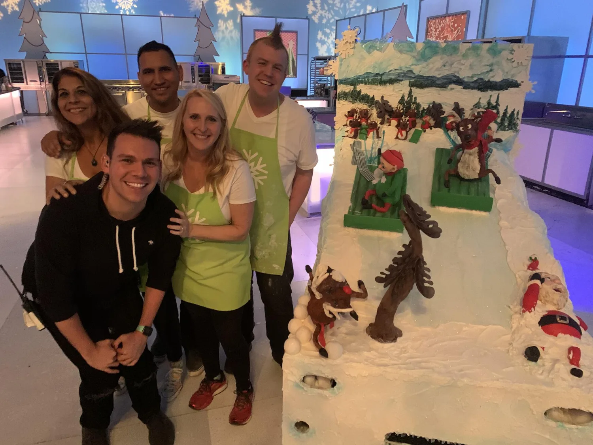

Bethany had only baked from a box when her son asked for a race-car cake. Twenty-one hours of googling and fondant later, the orders started. Today she’s a TLC and Food Network cake artist.
Ask about a custom cake





Photos: Betnie Bakes’s public Nextdoor gallery.
In July 2011, my son looked at me with his big blue eyes and asked me to make him a Lightning McQueen cake for his birthday. Up until then, I had only baked out of a box. After 21 hours of baking, coloring fondant, and decorating, I finally finished my first cake! I posted the cake on Facebook and the next thing you know, I had orders.
From Betnie Bakes’s public Nextdoor page, lightly trimmed.
Virtual, hands-on, sprinkles everywhere.
Fondant, figures and finishing.
Groups, parties and team events.